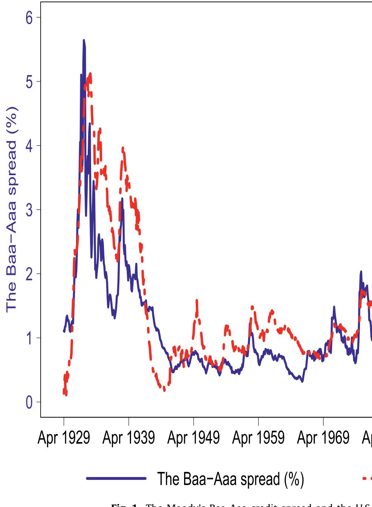
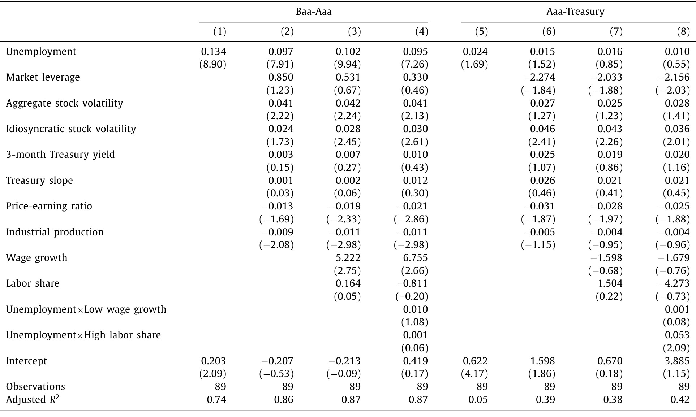
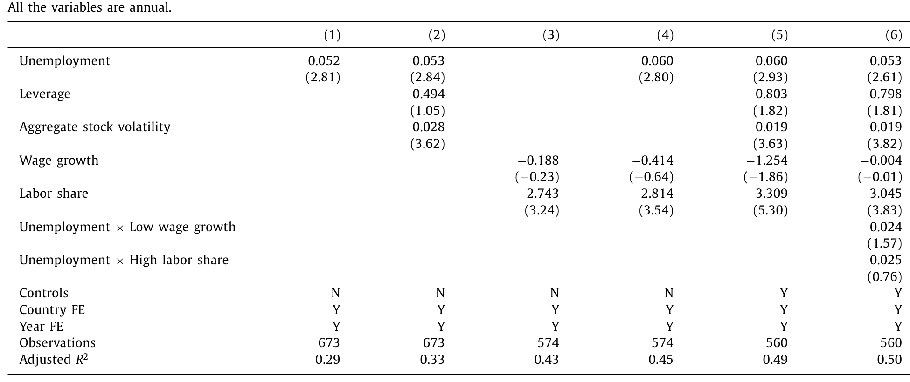
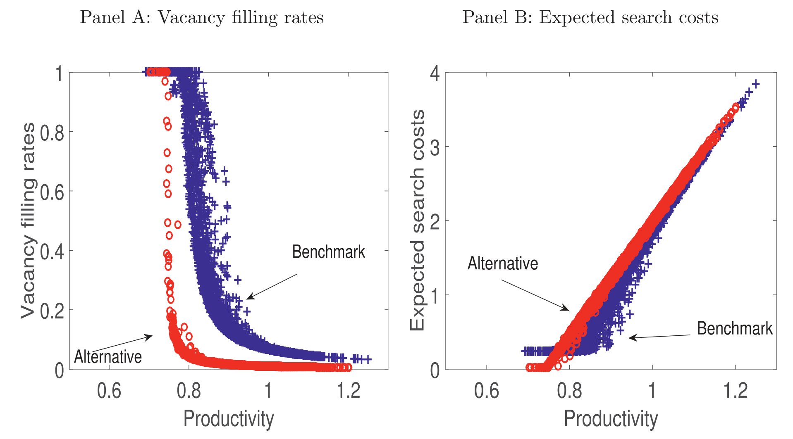
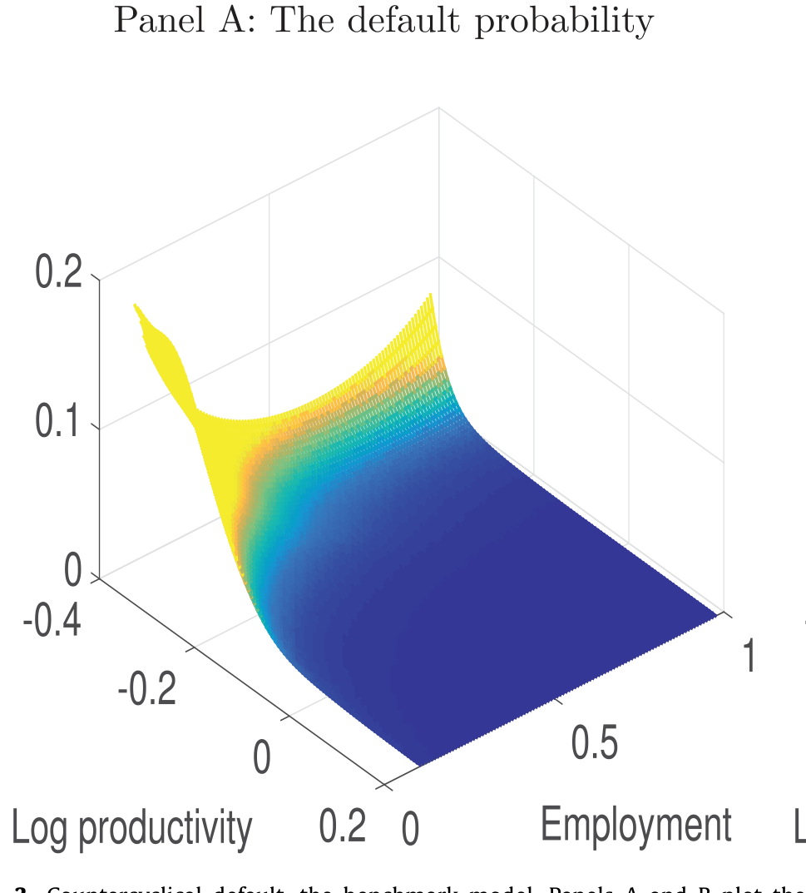
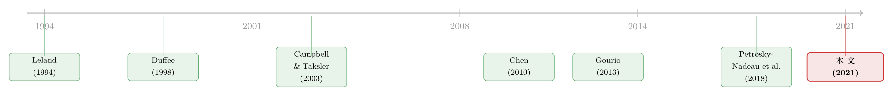

当招人变得太容易：失业率为什么预言了公司债的违约
本文读的是 Bai (2021, Journal of Financial Economics)：把可违约债务嵌进一个带失业的搜寻—匹配模型，作者发现失业率与信用风险之间存在又强又正的关系——美国总量数据里两者相关系数高达 0.81，失业率每升 1 个百分点，Baa-Aaa 信用利差就拉宽约 13.4 个基点。而真正驱动这一切的，是一个反直觉的机制：劳动力市场越是萧条、招人越容易，企业的「预期搜寻成本」反而降无可降，被一道地板牢牢顶住，于是公司在坏天气里更还不起债。
1 一张被忽视了九十年的图
先看一张图，时间跨度从 1929 年 4 月一直拉到 2018 年 12 月——几乎覆盖了整个现代美国公司债市场的历史。图里只有两条线：一条是穆迪 Baa 级与 Aaa 级公司债之间的收益率利差（Baa-Aaa credit spread），另一条是美国的失业率（unemployment rate）。
它们几乎是手拉着手在走。失业率往上冲，信用利差就跟着张嘴；失业率回落，利差也随之收窄。最触目惊心的是大萧条那几年：失业率高得离谱，信用利差也宽得离谱。两条线的相关系数是 0.81。

Figure 1: The Moody’s Baa-Aaa credit spread and the U.S
0.81 这个数字，本身没什么。但当作者把它和信用风险研究里那些「正统」的解释变量放在一起比，事情就有意思了。在结构化信用风险模型（structural credit risk models）的世界里，决定一家公司违约概率的，本应是它的资产波动率和杠杆——这是 Merton 以来的标准答案。可在 1929–2018 这段样本里，Baa-Aaa 利差与总量股市波动率的相关系数只有 0.61，与特质波动率（idiosyncratic volatility）只有 0.41，与市场杠杆也不过 0.61。
换句话说，失业率对信用利差的解释力，比那些教科书钦定的「传统决定因素」还要强。
这就是全文的悬念所在：一个本属于劳动经济学、几乎从未被请进信用风险方程的变量，凭什么把那些正统变量都比了下去？它到底是在重复别人已经讲过的故事（比如失业不过是衰退的影子，而衰退自然带来违约），还是真的握着一份别人没有的、关于违约的独立信息？
2 先把事实钉死：三套数据，一个方向
要回答「失业率是不是只是衰退的影子」，第一步不是建模型，而是把事实钉死、钉到不同的数据上去。作者用了三套互相独立的数据，做同一件事。
第一套，美国总量时间序列。 沿用 Campbell and Taksler (2003) 的设定，作者跑的是
$$ CS_t = \beta_0 + \beta_1\, U_t + \gamma\, Z_t + \varepsilon_t $$
其中 CS_t 是 Baa-Aaa 信用利差，U_t 是失业率，Z_t 是一大堆控制变量：市场杠杆、总量股市波动率、特质波动率、3 个月国债收益率、期限利差、市盈率、工业生产增速。数据为年度，1930–2018，共 89 个观测。
结果干净得令人意外。单变量回归里，失业率系数是 0.134（t = 8.90）——失业率每升 1 个百分点，Baa-Aaa 利差扩大 13.4 个基点；而仅凭失业率一个变量，就解释了信用利差 74% 的变动。加进那一整排传统控制变量之后，系数掉到 0.097，但 t 值仍有 7.91，依然又大又显著。

Table 1
这里藏着一个漂亮的「安慰剂检验（placebo test）」。作者把被解释变量换成 Aaa-Treasury 利差——即最高评级公司债相对长期国债的利差。这个利差里基本不含违约成分，主要反映的是流动性和税收差异。如果失业率只是个无所不包的宏观噪声，它应该对两个利差都有解释力。但结果是：在 Aaa-Treasury 回归里，失业率系数只有 0.024（t = 1.69），R² 仅 5%。失业率精准地咬住了利差中的违约部分，对非违约部分却几乎一无所知。 这一刀，把「失业率只是宏观噪声」的解释切掉了一大半。
接着，一个自然的问题是：总量数据只有一条时间序列，会不会是巧合？于是作者搬出第二套，美国行业层面的面板。他从劳工统计局（Bureau of Labor Statistics, BLS）的文档里，一行一行地把以文本形式记录的行业失业率扒下来，映射到四位 NAICS 代码，覆盖约 200 个行业、2000Q1–2017Q4。信用风险这边，他用预期违约频率（expected default frequency, EDF）来度量——按 Bharath and Shumway (2008) 的做法，用 Compustat 基本面和 CRSP 日度股票收益算出来，好处是覆盖面广，几乎所有上市公司都有。回归
$$ EDF_{ijt} = \beta_0 + \beta_1\, U_{jt} + \gamma\, Z_{it} + \varepsilon_{ijt} $$
带行业与时间双向固定效应，标准误在公司层面聚类。失业率系数 0.22（t = 7.15），在加入市场杠杆、资产波动率、以及工资增速和劳动份额（labor share）等劳动市场控制之后依然稳健。
这里有个值得一提的数据工程细节。工资增速和劳动份额都要用到 Compustat 的员工总薪酬项 XLR，可这一项在样本里只有 8% 非缺失——一旦用它，观测数会从 187,746 暴跌到 15,170。作者借鉴 Donangelo et al. (2019)，用员工数 EMP 乘以行业平均人均薪酬，构造了一个「扩展版」EXLR 把覆盖面补回来。结论不变：失业率的独立解释力，穿过了这两个劳动市场变量。
第三套，跨国面板。 作者动手编了一个回溯到 1900 年代、横跨 14 个国家的数据集，约 670 个国家—年观测，平均时间跨度 48 年。数据来自 Global Financial Data、Jordà et al. (2017) 的宏观史数据库、Barro and Ursúa (2008) 的跨国数据等。被解释变量是各国公司债指数相对久期匹配国债的利差。失业率系数 0.052（t = 2.81）——失业率每升 1 个百分点，信用利差扩大 5.2 个基点，且在层层控制后纹丝不动。

Table 3
三套数据，三个完全不同的时空与口径，指向同一个方向：失业率含有关于信用风险的、独立而重要的信息。 事实钉死了。但事实只是开胃菜——真正的问题是为什么。
3 真正关键的一步：搜寻成本的「地板」
到这里，标准的做法是把失业塞进一个现成的信用风险模型当外生变量。但作者偏不。他要的是一个内生的机制：失业、违约、信用利差，统统从同一个均衡里长出来。
于是他把可违约债务，嵌进了一个标准的 Diamond-Mortensen-Pissarides（DMP）均衡失业模型，并加上资本积累。这个模型有三块积木：
- 第一块，搜寻摩擦。 企业拥有生产技术和资本，雇佣工人生产。但工人不是从货架上拿的——企业要张贴空缺（post vacancies）去搜寻失业工人，匹配过程存在摩擦，由此产生的租金通过纳什议价（Nash bargaining）在企业和工人之间分配。
- 第二块，资本结构。 股东经营企业，但部分用可违约债务来融资。债务的税盾收益与违约损失，在一个动态权衡（dynamic trade-off）框架里决定最优融资。
- 第三块，内生违约。 违约是股东的选择：当「违约的期权」比「向债权人偿付的期权」更值钱时，股东就违约。
模型的核心，藏在企业的搜寻成本里。我们来一步步拆。
定义劳动力市场紧张度（labor market tightness）为空缺数与失业数之比：
$$ \theta_t = \frac{v_t}{u_t} $$
匹配函数把失业工人和空缺撮合成新的雇佣关系。沿用这一文献（如 den Haan, Ramey and Watson, 2000；Petrosky-Nadeau, Zhang and Kuehn, 2018）的标准设定，一个空缺在单位时间内被填上的概率——即填补率（job-filling rate）q(θ_t)——是紧张度的减函数：市场越紧张（θ 越大、空缺相对工人越多），越难招到人，q 越低。反过来，市场越松弛，招人越容易，q 越高，但它有个上限：一个空缺再容易，也不可能以超过 1 的概率被填上。
于是，填一个空缺的预期时长是 1/q(θ_t)，而雇一名工人的预期搜寻成本，就是每期空缺成本 κ 乘以这个预期时长：
$$ \text{expected search cost} = \frac{\kappa}{q(\theta_t)} $$
现在，真正关键的一步来了。请注意 q(θ_t) ≤ 1 这个约束。这意味着预期搜寻成本 κ/q(θ_t) 有一道下不去的地板：
c1 | 雇一名工人的预期搜寻成本：每期空缺成本 κ，乘以预期招聘时长 1/q(θ_t) c2 | 成本的「地板」：每期空缺成本 κ，劳动力市场再松、招人再容易，这块成本也降不到它以下 c3 | 填补空缺的概率（job-filling rate）：随市场紧张度 θ_t 下降而上升，但封顶在 1
这就是全文的核心，作者称之为预期搜寻成本的「向下刚性」（downward rigidity in expected search costs）。让我们把它翻译成一个故事：
在好年景，劳动力市场紧张，空缺多、工人少，招一个人要等很久，q(θ) 很小，搜寻成本 κ/q(θ) 很高。当衰退来临，企业纷纷撤掉空缺，劳动力市场变得拥挤，到处是失业工人，招人变得轻而易举，q(θ) 迅速上升，搜寻成本随之下降——这本来是企业在坏天气里省钱、维持偿债能力的一条出路。
但出路是有尽头的。 当市场萧条到一定程度，填补空缺几乎是瞬间的事，q(θ) 顶到了 1，搜寻成本撞上了 κ 这道地板，再也降不下去。于是在最坏的时候，企业最需要削减成本来还债，搜寻成本却被牢牢钉住——它没法再帮企业一把。偿债压力无处释放，企业被迫扎堆违约（default in clusters）。

Figure 4: highlights the downward rigidity of expected search
这就是为什么失业率能预言违约：失业率本身就是劳动力市场松弛程度的温度计，它直接决定了企业要搜寻多久、搜寻成本卡在哪里。 高失业意味着搜寻成本已经贴着地板，企业最脆弱。
更妙的是，金融摩擦与搜寻摩擦在这里彼此放大。坏时候信用成本本就高企，这会抑制企业创造岗位的意愿，让空缺相对失业工人更加稀缺，把那道「向下刚性」推得更紧。两种摩擦互相喂养，把宏观波动放大成偶发的灾难（endogenous disasters）。

Figure 3: Countercyclical default, the benchmark model. Panels A and B plot the
定量上，模型几乎复刻了数据里的全部关键特征。在模型生成的回归里，失业率每升 1 个百分点，信用利差扩大约 14 个基点——和数据里的 13.4 个基点惊人地接近。而因为这套机制的强非线性，经济偶尔会一头栽进灾难：违约率是逆周期的，在低生产率、高失业、投资者消费灾难性低、边际效用奇高的时刻飙升。违约与高边际效用的「不期而遇」，制造出一个又高、又波动、又逆周期、还右偏（positively skewed）的信用利差——这正是著名的「信用利差之谜（credit spread puzzle）」想要解释的那一组特征。
4 文献脉络：从「资产价值外生」到「让劳动说话」
要看清这篇论文站在哪儿，得把这条研究线捋一遍。
故事的起点，是结构化信用模型——Leland (1994) 把违约写成股东持有的一个期权，奠定了内生违约的框架。但这类模型与早期实证（如 Huang and Huang, 2012 的著名诘问）碰撞出了「信用利差之谜」：在合理参数下，违约根本不足以解释观测到的高利差。

第一条修补的路，是实证地去刻画信用利差的变动——Duffee (1998)、Collin-Dufresne et al. (2001)、Campbell and Taksler (2003)、Giesecke et al. (2011) 这一脉，找出杠杆、波动率等决定因素。本文正是站在这一脉上，用新编的行业与跨国面板，添上了「失业率」这块全新的拼图。
第二条路，是把宏观风险请进来。Chen et al. (2009)、Bhamra et al. (2010)、Chen (2010) 在禀赋经济（endowment economy）里，让暴露于宏观风险撑起又高又波动的利差。但这类模型有个共同的妥协：企业的资产价值是外生演化的，与企业的真实决策脱钩。与此平行的，是把稀有灾难（rare disasters）写进资产定价的传统——Rietz (1988)、Barro (2006)、Gabaix (2012)、Gourio (2012)、Wachter (2013)、Bai et al. (2019)——但它们大多落在股权价格上。
然后，一个转折出现了。Petrosky-Nadeau, Zhang and Kuehn (2018) 证明，标准搜寻模型本身就能内生地产生灾难。本文接过这把火，但往前推了两步：第一，它装上了可违约债务，去挖搜寻摩擦的信用风险含义；第二，它给信贷市场与劳动市场的联动，提供了扎实的新证据。
与最接近的几篇相比，本文的位置很清楚。Gourio (2013) 把外生灾难塞进 RBC 模型研究信用风险，但劳动选择是静态无摩擦的，失业根本没被建模。Gomes and Schmid (2021) 把企业资产价值的内生变动接到投资决策上，却抽离了劳动市场摩擦。Eckstein et al. (2019) 在搜寻模型里让公司利率帮助解释劳动市场波动，但他们的利率是外生的，没有违约和资本结构。Favilukis et al. (2017) 研究刚性工资如何影响信用风险，但失业在他们那里不是主角，向下刚性也不是内生长出来的。
本文的独到之处，是把失业摆到了正中央，并让那道「搜寻成本的地板」从搜寻经济里自然涌现。（关于劳动市场如何反过来成为企业谈判与违约的筹码，可参见《债，竟成了老板谈判桌上的底牌——重读「债务谈判渠道」与失业》；关于信用风险的动态结构，可参见《债，其实一直在动》。）
5 评论与延伸（Q&A + 研究方向）
(a) 几个可能的疑问
Q：失业率会不会只是「衰退」的代理变量，并没有自己的信息？
这正是作者用 Aaa-Treasury 安慰剂检验回应的核心质疑。失业率对含违约的 Baa-Aaa 利差系数为
0.134（R²=74%），对几乎不含违约的 Aaa-Treasury 利差却只有0.024、R²=5%。如果它只是宏观噪声，两个利差都该被它解释。它偏偏只咬住违约部分——这是它含独立信息、而非「衰退影子」的有力证据。
Q：「向下刚性」和文献里的「工资刚性」是一回事吗？
不是，这是本文最容易被误读的地方。Favilukis et al. (2017) 那类机制靠的是工资的刚性（工资降不下来 → 经营杠杆 → 信用风险）。本文的刚性发生在搜寻成本上，源于匹配过程的搜寻外部性，是
q(θ)≤1这个约束在均衡里内生造出来的，与工资黏性无关。事实上，控制了工资增速和劳动份额之后，失业率的解释力依然存在。
Q：模型凭什么能同时复刻信用利差的「水平、波动、周期性、偏度」这么多特征？
关键在强非线性带来的内生灾难。搜寻摩擦与金融摩擦互相放大，使经济偶尔栽进低生产率、高失业的灾难态；违约恰好在投资者边际效用最高时扎堆发生。违约与高边际效用的同步，既抬高了利差水平，又让它逆周期、右偏、且高度波动——这一组特征是同一个机制的副产品，而非分别校准出来的。
Q：失业率对违约的预测，会不会方向反了——是企业先违约、再裁员造成失业？
在模型里两者是同一均衡的内生结果，不存在单向因果。在实证里，行业与跨国面板都带双向固定效应，且失业率是在行业/国家层面度量的，单家公司的违约很难驱动整个行业或国家的失业率，反向因果的担忧因此被大大削弱。但严格的因果识别，作者并未声称（见下文我的评论）。
Q：跨国证据里失业率系数 0.052，比美国总量的 0.134 小很多，是不是说明机制在别处更弱？
量级不可直接比较：跨国回归带国家与年份双向固定效应、被解释变量是各国公司债指数利差、口径与样本期都不同，且控制变量集合也不一样。重点不在系数大小，而在于符号一致、统计显著、且穿过各种控制后稳健——三套独立数据都指向同一方向，这种一致性本身才是论据。
Q：既然失业率解释力这么强，是不是该把它直接放进信用风险定价模型当因子？
实证上它确实是个有用的状态变量。但本文的姿态恰恰相反：它不满足于把失业当外生因子塞进去，而是让失业、违约、利差从同一个搜寻均衡里内生地长出来。把失业当外生因子，会丢掉「金融摩擦放大搜寻刚性」这层互馈——而那层互馈，正是利差非线性的来源。
(b) 几个可能的研究问题与提案
1. 外资持有人会不会改变「搜寻成本地板」的传导？
【经济故事】本文的机制是国内劳动市场的搜寻刚性 → 偿债能力 → 信用利差。但如果一国公司债的边际买家是外国投资者，他们对本国失业的敏感度、以及在坏天气里的抛售行为，可能放大或削弱这条传导。外资在「灾难态」里的撤离，会不会让利差的右偏更极端？
【可行性】中。可在本文的跨国面板上，叠加各国公司债的外资持有份额（部分来自 IMF CPIS、各国托管数据），用失业冲击与外资份额的交互项识别。难点在外资份额的内生性与高频持有数据的可得性。
2. 把「搜寻成本地板」做成可检验的横截面预测。
【经济故事】模型预言：搜寻成本越贴近地板的行业（劳动力市场越松弛、招工越易、空缺久期越短），坏时候的违约弹性越大。这是一个干净的横截面假说，本文主要在总量与面板水平验证，尚未把「地板的紧迫度」直接做成一个排序变量。
【可行性】高。可用行业层面的空缺久期（JOLTS 的 vacancy yield / 招聘率）构造「距地板距离」，看它是否在横截面上预测 EDF 对失业冲击的敏感度。数据（JOLTS、Compustat、EDF）都现成，识别来自久期度量的横截面变异。
3. 流动性渠道与违约渠道的分解。
【经济故事】本文用 Aaa-Treasury 把流动性/税收剥离掉，主张失业咬住的是违约。但在压力时期，搜寻刚性导致的违约扎堆，本身可能通过抛售传染恶化债券流动性——违约渠道与流动性渠道也许并非正交。
【可行性】中。可用 TRACE 层面的流动性度量（如 size-adapted 流动性指标，参见《把「成交价」从「成交量」里解放出来》）与 EDF 配对，看失业冲击在违约成分与流动性成分上的分解。难点在两个渠道在危机中高度共动、难以彻底分离。
4. 大萧条作为「样本外」的天然压力测试。
【经济故事】图 1 里最刺眼的就是大萧条——失业率与利差同时冲到历史极值。本文在合并样本里用到了这段，但把 1929–1933 单独拎出来，作为模型「灾难态」预测的样本外检验，会非常有说服力：模型预测的违约扎堆、利差右偏，是否在那几年精确兑现？
【可行性】中。Giesecke et al. (2011) 提供了 150 年的违约率序列，可与模型模拟矩对照。难点在历史数据的口径一致性与早期公司债样本的代表性。
6 我的判断
贡献。 这篇论文最漂亮的地方，不是「失业能预测信用风险」这个相关性——相关性谁都能跑出来——而是它给了一个内生的、可证伪的机制：搜寻成本的向下刚性。这个机制把一个老问题（信用利差之谜）和一个看似无关的领域（劳动经济学的搜寻—匹配）焊在了一起，而且定量上 14 bps 对 13.4 bps 的吻合相当有分量。三套独立数据的事实工作扎实，那个 Aaa-Treasury 安慰剂检验尤其干净。它真正做到了让「失业」从配角变成均衡的内生主角。
对识别的担忧。 实证部分本质上仍是相关性回归，作者也很诚实，没有声称因果。双向固定效应和「失业在行业/国家层面、违约在公司层面」的错位度量，缓解了反向因果，但没有外生冲击。我会想看到一个对劳动市场松弛度的、更外生的识别——比如行业层面因技术/贸易冲击导致的失业变动，作为工具，去识别它对违约弹性的因果效应。模型这边，向下刚性的强度高度依赖匹配函数的设定与 κ 的校准，定量结论对这些参数的敏感性值得更透明地呈现。
后续想看的。 三件事。其一，把「距地板距离」做成横截面排序变量，直接检验机制的微观预测（上文提案 2）。其二，把外资持有人放进来，看搜寻刚性这条国内传导，在边际买家是外国人时是否还成立（提案 1）——这对理解美国公司债市场的脆弱性尤其重要。其三，把大萧条作为样本外压力测试，让模型的「灾难态」去对账历史（提案 4）。如果这三件事都成立，那么「失业率」就不只是信用风险方程里一个好用的右手变量，而真的是一扇通往违约机制的门。
参考文献
- Bai, H., Hou, K., Kung, H., Li, E., Zhang, L. (2019). The CAPM strikes back? An equilibrium model with disasters. Journal of Financial Economics 131, 269–298.
- Barro, R. (2006). Rare disasters and asset markets in the twentieth century. Quarterly Journal of Economics 121, 823–866.
- Barro, R., Ursúa, J. (2008). Macroeconomic crises since 1870. Brookings Papers on Economic Activity, 255–335.
- Bhamra, H., Kuehn, L., Strebulaev, I. (2010). The levered equity risk premium and credit spreads: a unified framework. Review of Financial Studies 23, 645–703.
- Bharath, S., Shumway, T. (2008). Forecasting default with the Merton distance to default model. Review of Financial Studies 21, 1339–1369.
- Campbell, J.Y., Taksler, G. (2003). Equity volatility and corporate bond yields. Journal of Finance 58, 2321–2349.
- Chen, H. (2010). Macroeconomic conditions and the puzzles of credit spreads and capital structure. Journal of Finance 65, 2171–2212.
- Chen, L., Collin-Dufresne, P., Goldstein, R. (2009). On the relation between the credit spread puzzle and the equity premium puzzle. Review of Financial Studies 22, 3367–3409.
- Collin-Dufresne, P., Goldstein, R., Martin, S. (2001). The determinants of credit spread changes. Journal of Finance 56, 2177–2207.
- den Haan, W.J., Ramey, G., Watson, J. (2000). Job destruction and propagation of shocks. American Economic Review 90, 482–498.
- Donangelo, A., Gourio, F., Kehrig, M., Palacios, M. (2019). The cross-section of labor leverage and equity returns. Journal of Financial Economics 132, 497–518.
- Duffee, G. (1998). The relation between treasury yields and corporate bond yield spreads. Journal of Finance 53, 2225–2241.
- Eckstein, Z., Setty, O., Weiss, D. (2019). Financial risk and unemployment. International Economic Review 60, 475–516.
- Favilukis, J., Lin, X., Zhao, X. (2017). The elephant in the room: the impact of labor obligations on credit risk. Unpublished working paper, University of Minnesota.
- Gabaix, X. (2012). Variable rare disasters: an exactly solved framework for ten puzzles in macro-finance. Quarterly Journal of Economics 127, 645–700.
- Giesecke, K., Longstaff, F., Schaefer, S., Strebulaev, I. (2011). Corporate bond default risk: a 150-year perspective. Journal of Financial Economics 102, 233–250.
- Gomes, J.F., Schmid, L. (2021). Equilibrium asset pricing with leverage and default. Journal of Finance 76, 977–1018.
- Gourio, F. (2012). Disaster risk and business cycles. American Economic Review 102, 2734–2766.
- Gourio, F. (2013). Credit risk and disaster risk. American Economic Journal: Macroeconomics 5, 1–34.
- Huang, J., Huang, M. (2012). How much of the corporate-treasury yield spread is due to credit risk? Review of Asset Pricing Studies 2, 153–202.
- Jordà, O., Schularick, M., Taylor, A. (2017). Macrofinancial history and the new business cycle facts. NBER Macroeconomics Annual, 213–263.
- Leland, H.E. (1994). Corporate debt value, bond covenants, and optimal capital structure. Journal of Finance 49, 1213–1252.
- Petrosky-Nadeau, N., Zhang, L., Kuehn, L. (2018). Endogenous disasters. American Economic Review 108, 2212–2245.
- Rietz, T. (1988). The equity risk premium: a solution. Journal of Monetary Economics 22, 117–131.
- Wachter, J. (2013). Can time-varying risk of rare disasters explain aggregate stock market volatility? Journal of Finance 68, 987–1035.